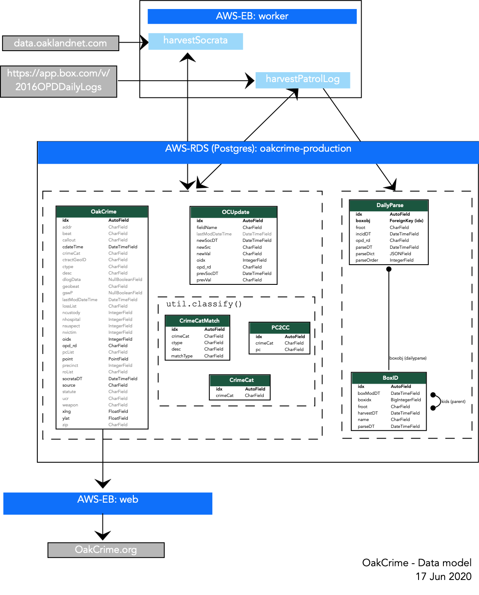

OakCrime System Architecture
OakCrime maintains a database of crime incidents reported by Oakland Police Department (OPD) and supports a Django application that allows querying and visualization on maps. The main features of the design and primary data tables are shown in the data model diagram below:

The system is implemented via two Amazon Web Service (AWS) Elastic Beanstalk environments and an AWS RDS database:
worker: performs daily “harvests” from two resources provided by OPD
data.oaklandnet.com: harvestSocrata gathers daily reports on all (~100/day) incidents via an API developed by Socrata.com
https://app.box.com/v/2016OPDDailyLogs: harvestPatrolLogs gathers (~ 10/day) PDF “daily log” reports on major “Part 1” crimes on most days
This process also merges new data about incidents already part of the database
oakcrime-production: a Postgres (with postgis geographic support) database into which worker posts new incidents
web: Provides the OakCrime.org website via a Django application supported by the database
The OakCrime table contains primary information about incidents. OCUpdate maintains information about changes made to incident data made based on subsequent reports. For example, major crimes reported in daily logs often have details that are not part of the standard incident reporting. All incidents are classified into a crime hierarchy called OAKCC; further details on this process are described in a separate note. harvestPatrolLogs maintains a catalog of Box documentIDs to identify newly posted PDF's. These are cached, and the intermediate results of the (computationally expensive) PDF parsing are also maintained as JSON dictionaries in the DailyParse table.